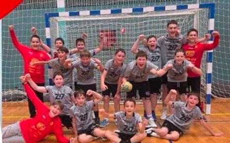
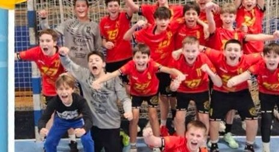
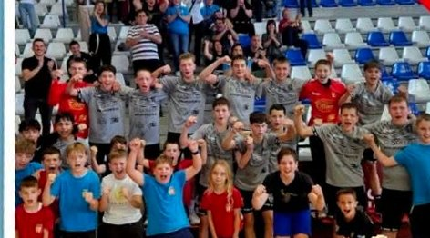
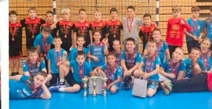

Kamp
Više od 50 djece na tradicionalnom ljetnom kampu
Na kraju sezone 53 djece i 6 trenera boravilo je na kampu u Segetu Donjem: treninzi, igre na vodi, druženje i animacijski program.
Izvor: KAportal
RK Sedmerac Karlovac · od 2018.
Rukomet za djecu od prvih razreda osnovne škole do kategorije U15. Treniraj u klubu prvaka Hrvatske U11 – predznanje nije potrebno.
Upisi za sezonu 2026./27. su otvoreni

Prvaci Hrvatske U11 · 2025.
01 · Uspjeh sezone 2024./25.
U svibnju 2025. naši su mladi rukometaši na završnom turniru 1. HRL U11 u Poreču osvojili naslov prvaka Hrvatske. U polufinalu su svladali Metalac, a u finalu Sesvete. Kristijan Ljubanović proglašen je najboljim trenerom turnira.
19:14

02 · Momčadi
Treniraš s vršnjacima, u grupi prema godištu – i napreduješ svojim tempom.
Prvi koraci kroz igru: lopta, trčanje, skokovi i osnovne kretnje.
Prvaci Hrvatske
Prve lige i turniri. Prvaci Hrvatske u sezoni 2024./25.
Tehnika, taktika i ligaška natjecanja Hrvatskog rukometnog saveza.
Najstarija kategorija u klubu: ozbiljniji trenažni proces i natjecanja.
Raspored treninga za sezonu 2026./27. uskoro objavljujemo. Za termin probnog treninga nazovite nas.
03 · Klub
RK Sedmerac osnovali su 2018. godine u Karlovcu Kristijan Ljubanović i Igor Bajac s idejom da djeci približe rukomet kroz kvalitetan stručni rad, igru i zajedništvo. Danas klub okuplja više od stotinu mladih rukometaša, od škole rukometa do kategorije U15.
Uz treninge i natjecanja idemo na turnire, a na kraju sezone i na tradicionalni ljetni kamp – 2026. u Segetu Donjem bilo je 53 djece i 6 trenera.


Uči suradnji i poštivanju suigrača i protivnika – i kako zajedno pobjeđivati i gubiti.
Trčanje, skokovi i bacanja razvijaju koordinaciju, brzinu i snagu – kroz igru.
U dvorani, na turnirima i kampovima nastaju prijateljstva koja traju.
Svaki gol, obrana i dobro dodavanje grade samopouzdanje i radne navike.
04 · Novosti
Kamp
Na kraju sezone 53 djece i 6 trenera boravilo je na kampu u Segetu Donjem: treninzi, igre na vodi, druženje i animacijski program.
Izvor: KAportal
Natjecanja
U finalu završnice 1. HRL U11 u Poreču pobijedili smo Sesvete 19:14. Za najboljeg trenera turnira proglašen je Kristijan Ljubanović.
Izvor: Hrvatski rukometni savez
Projekti
51 rukometna radionica u osnovnim školama Karlovca i okolice, uz radionice o prehrani i nenasilju, sufinancirano od Ministarstva turizma i sporta.
Izvor: Trend
05 · Za roditelje
Odgovori na pitanja koja roditelji najčešće postavljaju prije upisa. Za sve ostalo tu smo na telefonu i e-mailu.
Djecu primamo od prvih razreda osnovne škole pa sve do kategorije U15. Grupe slažemo prema godištu, tako da svako dijete trenira s vršnjacima.
Dijete dolazi na probni trening u grupu svoje dobi, upoznaje trenera i suigrače te isproba rukomet – bez obveze upisa.
Informacije o mjesečnoj članarini i načinu plaćanja dobit ćete pri upisu ili telefonom na 098 797 760.
Za nastup na natjecanjima djeca trebaju važeći sportsko-liječnički pregled. Klub će vas uputiti kada i gdje ga obaviti.
06 · Upisi
Upisi za sezonu 2026./27. su otvoreni, a predznanje nije potrebno. Ispunite prijavu i javit ćemo vam se s terminom probnog treninga.
Projekt Rukometno sutra (2023.) sufinanciran je sredstvima Ministarstva turizma i sporta Republike Hrvatske.